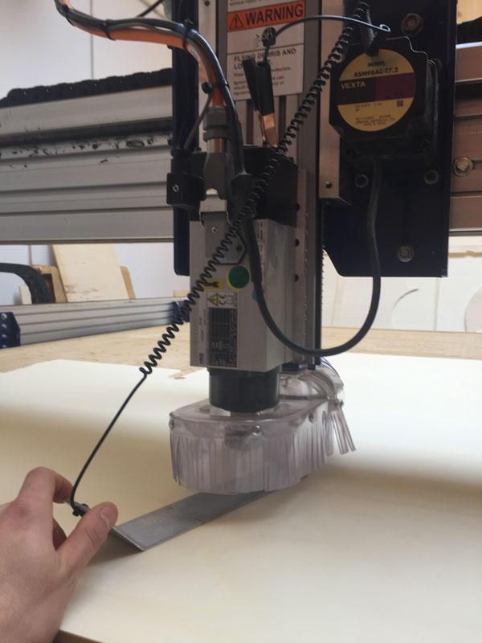
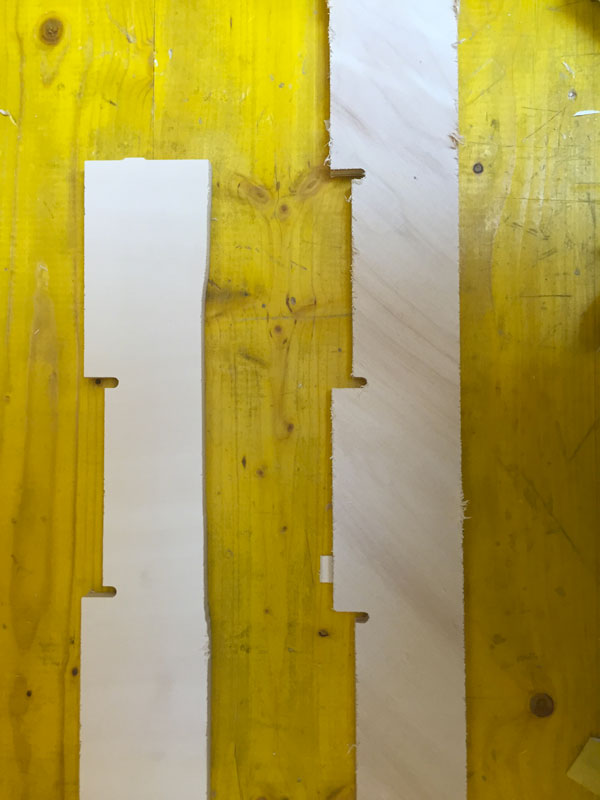

Lesson n. 8:Computer-Controlled Machining
This week we have to "make something big", using a cnc machine.
The Idea
I decided to realize a table, more by necessity instead of pleasure: here in Milan in the apartment where I moved, there isn't a decent table in the kitchen.
The idea is to create a table using only joints, without the aid of screws or glue: to do this I found a great help in a guide found on the internet with a collection of 50 different types of join. You can find the complete guide here.
For my project i chose 3 kind of joints:
I use this to join the legs of the same side between them
This for joining the legs on the same angle between them
And this to join the legs with the surface of the table
After have chosen the type of "join" to use, I started drawing in Rhino, using a layer for each operation that i need for my project:
- Red Layer: external cut;
- Blue Layer: internal cut;
- Green Layer: engrave at 6 mm;
- Light Blue Layer: engrave at 6,7 mm;
Once finished the drawing, to control the joints I created a 3D model of the table by extruding the curves of the design by the thickness of the wood that I will use to realize it.
After checking the joints I exported my project in .dxf to be able to import into VCarve to create the toolpath for milling.
Milling
Once opened VCarve and imported the files of the table, the program asks you to specify the size of the work area (the wooden board) which in my case is 2100 mm x 1450 mm.
After setting the size of the work area you must arrange the parts of the project within it, this can be done either manually or using the automatic nesting. Using this function, the program will dispose the pieces as best considering three main parameters:
- Tool diameter: to set the diameter of the tip;
- Cleareance: the distance between the tool and the near piece;
- Border Gap: how much space you want to keep between the pieces and the border of the work area;
Once arranged the pieces, you have to create the toolpath for each operation that the machine will have to perform: selecting a layer at a time, and each time setting different parameters for each operation, I got 4 toolpath.
VCarve also lets you view a 3d preview of how your project will be milled:
After preparing all toopath, we can export it and open the ShopBot Control System Software.
Before importing the toolpath must set the position of the three axes (x, y, z):
- for the x and y position you have to move the tip in the starting position relative to the project to realize, using the control panel of the machine;
- for the z position you must use the appropriate option for setting the height of the tip which, thanks to a metal plate connected to the machine, is able to establish the correct position.

After set the correct initial position of the axes, we can start to milling the project, importing a toolpath at a time.
During the milling i encountred some problems with the wood, as much curved, and this has meant that some tabs in the middle of the panel didn't come good and the piece, that should have been hooked, start moving and being damaged.

Once the machine have finish, i have removed the tab (used to hold the pieces during the milling) and starting to cleaning the pieces using the sandpaper.
Here you can see some details of the joins:
And this is the final result:
to make the table a little 'more cute, I passed some primer Pine color to all parts

When the primer dry, I reassembled the table and I painted green the surface of the table. this is the end result: